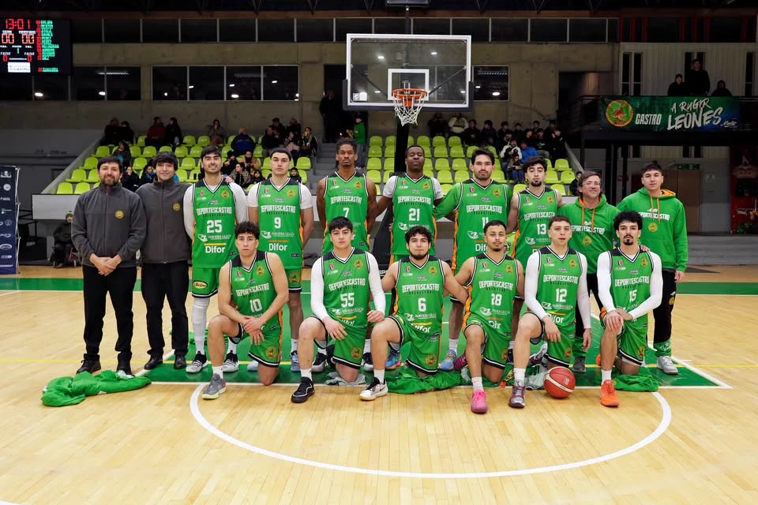
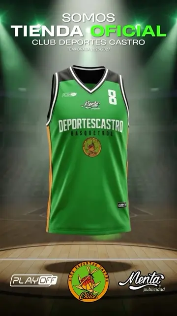
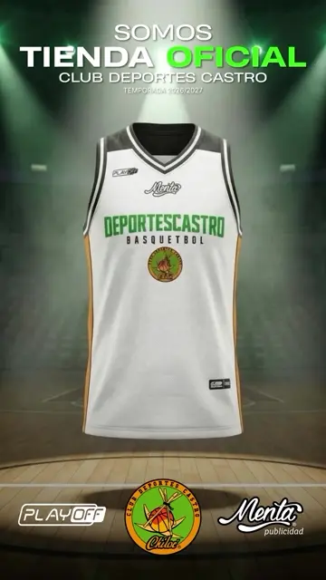

Nace el club
El 12 de febrero se funda Deportes Castro. Un año después, el equipo debuta en la Dimayor.
BÁSQUETBOL · CASTRO, CHILOÉ
Desde 2003, el Club Deportes Castro lleva el verde y blanco de la isla a las canchas del básquetbol chileno.
Conoce al club
HISTORIA DEL CLUB
El 12 de febrero se funda Deportes Castro. Un año después, el equipo debuta en la Dimayor.
Los Leones vencen a Deportes Victoria en la final y levantan su primer trofeo de la Libsur.
Un 97–92 en tiempo extra ante Boston College sella la serie por 3–1 y el título de la Liga Nacional.
INDUMENTARIA · 2026/27
El nombre de Castro en el pecho, el escudo de Chiloé y el número 8. Dos versiones para vestir los colores del club.

